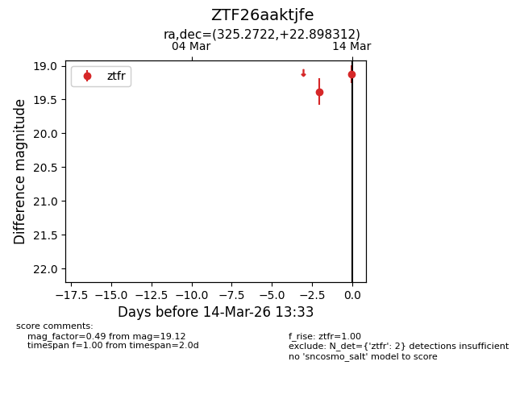
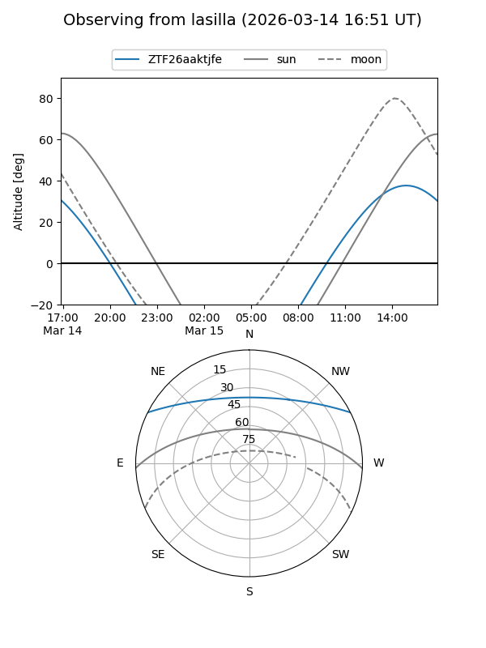
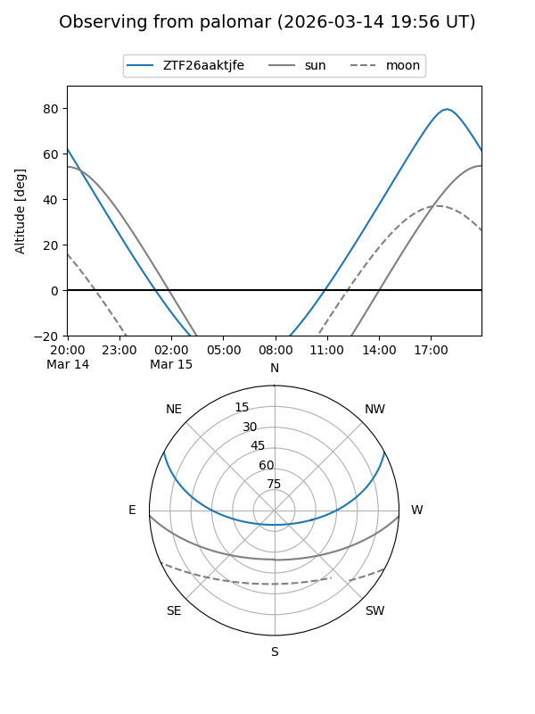

ZTF26aaktjfe
Target ZTF26aaktjfe at 2026-03-14 13:35
Aliases and brokers:
FINK: link
Lasair: link
ALeRCE: link
alt names
ZTF26aaktjfe (ztf,fink_ztf)
Coordinates:
equatorial (ra, dec) = 325.2722,+22.89831
equatorial (HMS+DMS) = 21:41:05.34,+22:53:53.92
galactic (l, b) = (75.7228,-22.05786)
Flags:
Photometry:
last ztfr=19.12
2 ztfr detections
Lightcurve

Visibility


Additional plots